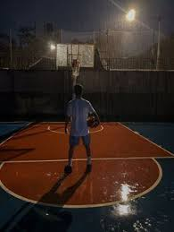
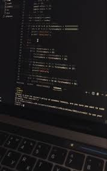

Hi, I'm Travis from Kinawe, Libona, Bukidnon. I am an aspiring programmer and an incoming Grade 11 student who is passionate about technology and learning new skills. I enjoy exploring coding, creating projects, and improving my knowledge in software development.
I enjoy designing mobile app interfaces using Figma while also learning Python for data analysis and visualization. My goal is to become a professional who bridges data science and mobile app development—creating apps that are both intelligent and user-friendly.
I enjoy spending my free time playing the guitar, playing the drums, and playing basketball because they help me relax, express my creativity, and stay active.


I am inspired to become an IT professional because I am passionate about technology and eager to learn how to create solutions that can help improve people’s lives.
I am proud to have participated in Arnis during the Division Meet, where I represented my school and demonstrated my skills, discipline, and sportsmanship in the sport.
Through my EIM class, I developed practical electrical skills and successfully completed simulator activities that improved my problem-solving abilities and technical knowledge.
My interest in IT comes from my passion for technology, problem-solving, and learning how computers and software work to create useful and innovative solutions.
My goal is to continuously learn new technologies, improve my skills in programming, and become more confident in handling real-world IT projects.